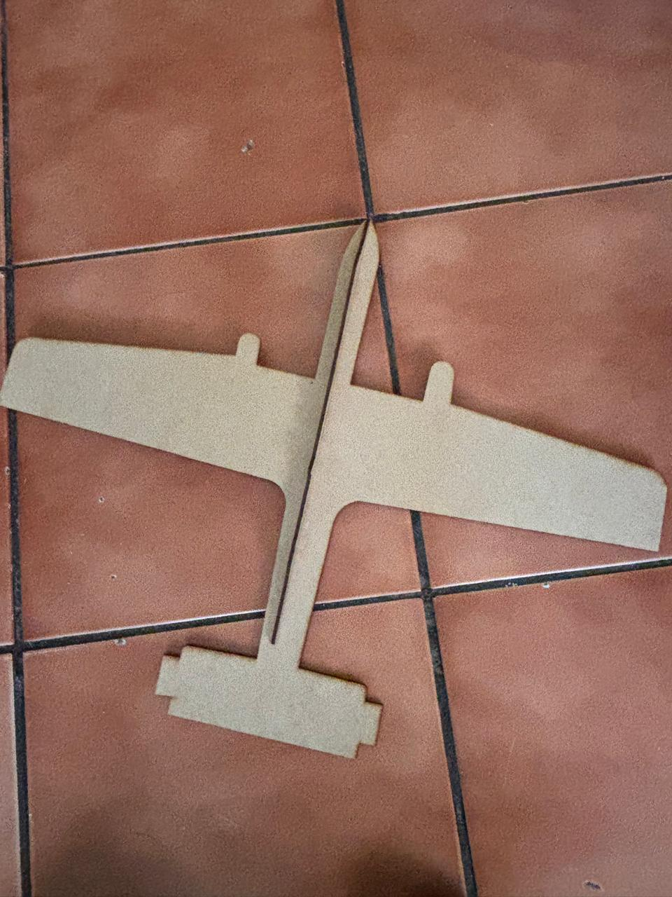

Resumen
Una cortadora láser es una máquina que utiliza un haz de luz concentrado para cortar, grabar o marcar diversos materiales como madera, acrílico, cartón, metal y vidrio. Funciona mediante un sistema que dirige el láser a través de espejos hacia un cabezal móvil, controlado por software. Este láser vaporiza o quema el material siguiendo un diseño predefinido
Simulacion
Para usarla, primero se crea o importa un archivo de diseño en un software compatible y se ajustan los parámetros del láser (potencia, velocidad y frecuencia) según el material. El material se coloca en la cama de corte, asegurándose de que esté bien nivelado. Luego, se inicia el proceso, monitoreando la máquina para garantizar un corte limpio y evitar riesgos.
dado esta explicacion damos el ejemplo de nuestro avion calcado de solidworks con una imagen que importamos de nuestra biblioteca.

Resultado
 R = RaulConclusion
Soldar es un proceso que requiere precisión, paciencia y práctica para lograr uniones fuertes y duraderas entre piezas de metal. Es una habilidad que combina técnica y seguridad, ya que el uso de altas temperaturas y electricidad implica riesgos. A medida que se adquiere experiencia, se mejora el control sobre el arco y la calidad del cordón de soldadura, logrando resultados más sólidos y estéticamente agradables. Soldar es fundamental en la construcción, reparación y creación de estructuras metálicas, y es una herramienta clave en muchos ámbitos industriales y artísticos.
video de --> Como soldar a pasos